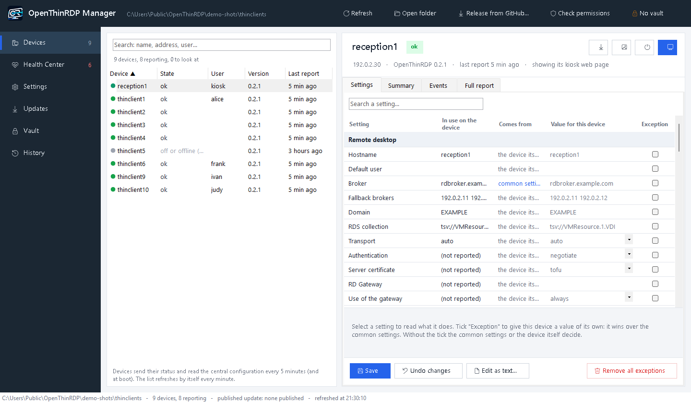

RDP su UDP, su un thin client gratuito
Windows può inviare il desktop remoto in UDP (MS-RDPEMT / MS-RDPEUDP): invece di mettersi in coda dietro i pacchetti TCP persi, adatta fotogrammi e qualità alla linea. Il client di Windows lo fa da anni; su Linux il trasporto UDP di FreeRDP è ancora una pull request in revisione (FreeRDP #13608), quindi i sistemi per thin client basati sul FreeRDP ufficiale si collegano solo in TCP. OpenThinRDP contiene FreeRDP compilato con quel trasporto, provato su thin client veri con una VDI Windows 11, con ritorno automatico al TCP.
Su una linea pessima: OpenThinRDP in UDP contro il TCP
Tutto è partito da una porta di switch guasta che perdeva il 43% dei pacchetti grandi: in TCP il desktop remoto si bloccava. Abbiamo riprodotto quella linea su un thin client vero e poi alzato la perdita su tutti i pacchetti della macchina virtuale un gradino alla volta. VDI Windows 11 dietro un RD Connection Broker, carico a schermo intero che cambia ogni pixel, fotogrammi e perdita misurati dal server.
| Pacchetti persi | In TCP | OpenThinRDP in UDP |
|---|---|---|
| 20% | 0,6 fotogrammi al secondo: lo schermo quasi non si muove | non misurato (19-21 fps al 50%) |
| 43% di quelli grandi* (la porta guasta) | 0-0,1 fps | 16-21 fps, 7 minuti di fila |
| 50% | non misurato (0,2 fps già al 30%) | 19-21 fps, come su una linea pulita |
| 70% | non misurato | 18-19 fps** |
| 80% | non misurato | 4 fps, poi il tunnel si arrende |
* Le altre righe perdono quella quota di tutti i pacchetti della macchina virtuale; questa il 43% dei pacchetti grandi e il 5% dei piccoli, come sulla porta guasta. ** Al 70% la connessione TCP che RDP tiene accanto al tunnel UDP può chiudere la sessione dopo 20 s senza conferme. Un solo ambiente (Dell OptiPlex 3000 Thin Client, VDI Windows 11 su Hyper-V), perdita simulata con netem: metodo e script per avere i vostri numeri.
Per arrivarci è servita una correzione al trasporto UDP di FreeRDP, che abbiamo trovato e segnalato in #13608 e che ora ne fa parte. Tutti i gradini: docs/udp.md. Cosa è in produzione e cosa è solo provato: stato del progetto (in inglese).
10 ore di prove aggressive
Prove di 2, 5 e 3 ore su un thin client vero: CPU della VM al 100%, perdita di pacchetti del 2% e del 10%, banda limitata a 15 Mbit/s, 40 ms di jitter, rete staccata per 20 s, client ucciso. L'UDP non è mai andato peggio del TCP; l'ultima prova di 3 ore, sulla build attuale, è rimasta viva 178 minuti su 178 senza mai lasciare l'UDP (prova di 5 ore, prova di 3 ore).
Di nuovo in UDP dopo un'interruzione
Dopo 20 secondi di rete staccata la sessione torna da sola, di nuovo in UDP, in circa 12 secondi.
Lo scegliete per ogni postazione
TRANSPORT=auto (UDP, TCP quando l'UDP è bloccato), udp (solo UDP) o tcp, dalla postazione o centralmente per tutto il parco.
Cosa fa
RDP su UDP
FreeRDP 3 compilato con il trasporto UDP (MS-RDPEMT / RDPEUDP), ancora in revisione nella versione ufficiale: sessioni più fluide con server carichi, Wi-Fi con perdite e VPN. Ritorno automatico al TCP, oppure l'uno o l'altro imposto per postazione.
RDS, VDI o un singolo PC
Tramite un RD Connection Broker verso session host o una raccolta VDI su Hyper-V (load balance info, broker di riserva), oppure direttamente verso qualsiasi PC Windows con il Desktop remoto attivo.
USB pensato per la VDI
Webcam e cuffie funzionano in riunione: telecamera dal canale telecamera di RDP, microfono dal canale audio, così Teams e Zoom nella sessione li vedono entrambi. Chiavette di firma, chiavi tachigrafo e altri dispositivi particolari passano a Windows interi, anche collegati a sessione aperta. Lettori di smart card dal canale smart card, touch screen come veri touch.
Gestito da una cartella condivisa
Nessun agente e nessun server di gestione: le postazioni scrivono il loro stato in una cartella SMB e ne leggono impostazioni centrali, logo, sfondo e aggiornamenti. Un gestore Windows (italiano e inglese, senza installazione) modifica tutto.
Aggiornamenti firmati
Dalle release di GitHub o dalla vostra cartella, quando lo decidete voi: installati in background e applicati appena finisce la sessione. Gli aggiornamenti di sicurezza Debian si installano da soli; quelli di FreeRDP solo con release provate.
Postazione kiosk blindata
Si accende in pochi secondi sulla schermata di accesso: niente desktop, niente menu, niente console di testo. Impostazioni dietro un PIN, diagnostica per l'assistenza, accensione e spegnimento a orario e Wake-on-LAN.
Provarlo in cinque minuti
1. Scaricate la ISO e scrivetela su una chiavetta USB (Rufus in modalità DD, balenaEtcher o dd).
2. Avviate il PC dalla chiavetta: il sistema live parte da solo dopo 10 secondi e non scrive mai sul disco.
3. Impostate il vostro broker (o il nome di un PC Windows) e accedete.
4. Vi piace? Riavviate e scegliete Installa: mostra il disco interno che sta per cancellare e chiede conferma prima di scrivere qualsiasi cosa, poi circa tre minuti. Mai un disco USB. Per le installazioni in serie, Unattended install salta la domanda.
Serve un PC o thin client x86 a 64 bit con UEFI (Secure Boot funziona), 2 GB di RAM e 8 GB di disco.
In produzione
OpenThinRDP fa girare ogni giorno tutti i thin client dell'azienda da cui è nato: 14 Dell OptiPlex 3000 Thin Client in ufficio, alle casse, in laboratorio e alle pese, con una VDI Windows 11 su Hyper-V dietro due RD Connection Broker. Le postazioni sono state convertite sul posto dal sistema che avevano prima e ricevono ogni versione come pacchetto firmato dalla loro cartella di gestione, installato durante le sessioni e applicato quando la sessione finisce. Gli aggiornamenti di sicurezza di FreeRDP arrivano in OpenThinRDP entro 7 giorni (la 3.32.2: in quattro ore). Cosa è in produzione, cosa è solo provato e cosa non c'è ancora: stato del progetto (in inglese). Le segnalazioni da altro hardware sono benvenute nelle discussioni.
Il confronto
OpenThinRDP è pensato per le reti basate su Desktop remoto Windows che vogliono un client gratuito, aperto e semplice da gestire. Se vi servono Citrix o Horizon, i sistemi commerciali sono la scelta giusta. Confronto dettagliato con IGEL OS, Dell ThinOS, Stratodesk NoTouch, ThinStation e openthinclient (in inglese).


Domande
È davvero gratuito?
Sì: Apache 2.0, nessuna licenza per postazione, nessun server di gestione, nessun account cloud.
Su quale hardware funziona?
PC e thin client x86-64 con UEFI. Il dispositivo di riferimento è il thin client Dell OptiPlex 3000; altri modelli (HP serie t, Wyse, Fujitsu, piccoli PC da ufficio) dovrebbero funzionare e le segnalazioni sono benvenute. I dispositivi ARM non sono ancora supportati.
Supporta Citrix o VMware Horizon?
No, solo RDP: Microsoft Remote Desktop Services (RD Connection Broker, session host), raccolte VDI su Hyper-V, oppure un singolo PC o server Windows.
Come funziona qui l'RDP su UDP?
L'immagine contiene FreeRDP compilato dalla pull request che aggiunge il trasporto UDP (FreeRDP #13608) più una nostra correzione che lo tiene in piedi sulle linee con perdite (19-21 fps con il 50% dei pacchetti persi). Con TRANSPORT=auto usa l'UDP e torna al TCP quando l'UDP è bloccato.
Posso mettere il logo della mia azienda?
Sì: dal gestore, per tutte le postazioni o per una, oppure dentro la vostra immagine.
Cosa viene dopo?
VPN (WireGuard, OpenVPN), RD Gateway, 802.1X, installazione da rete (PXE), più hardware provato e più lingue. Diteci cosa vi serve nelle discussioni.